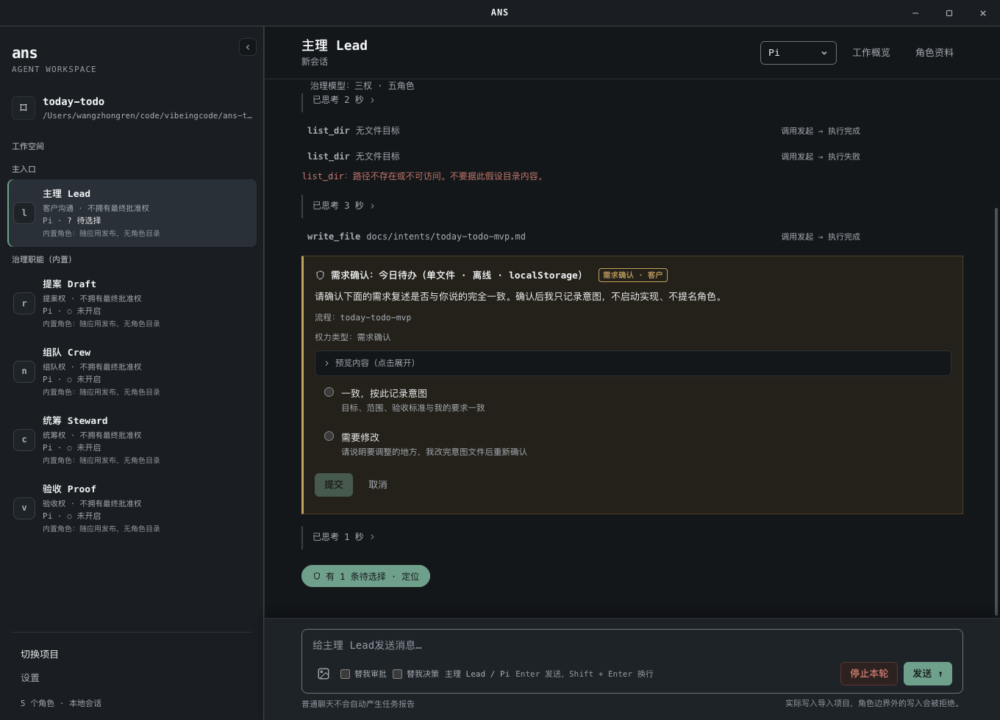

Claude 默认
- 必填
ANTHROPIC_API_KEY- 可选
ANS_CLAUDE_MODEL、ANTHROPIC_BASE_URL
An Autonomous Organization Runtime for AI Agents.
Role-first 组织原则
ANS Studio 把多个 AI Agent 组织成有角色、有边界、有派发、有验收的团队，而不是让一个助手单打独斗。
组织的底层原则是 Role-first：先明确业务责任与角色，再确定模块和代码归属；写权限只来自角色边界。桌面默认使用 Claude，也可切换 Pi 与 Codex；CLI 提供 demo、Pi、Codex 与 Claude。
macOS 13+ / Windows 10/11 MIT 许可证 三平台原生构建

模型能写代码，但不会自己知道责任该落在谁身上。Role-first 把组织写在代码之前：角色先于模块，边界先于写入，证据先于验收。
先明确业务责任与角色，再确定模块和代码归属；角色卡说明职责，boundary.yaml 的 Section 1 列出可修改路径。
写权限只来自角色边界；越界写入在产生副作用前被拒绝，并指回正确归属。shell 命令与其他操作一样，逐条走审批链。
报告声明“已完成”只是一条声明；Proof 独立核对交付与回交证据，再出验收卡。
Role-first 在新建项目里落成五个内置治理角色。三权指提案、组队、统筹三类决定权；沟通与验收不是决定权。五个角色都不拥有最终批准权。
客户沟通与默认主入口；把意图写入 docs/intents/；兼任工作流管理者。
形成提案与跨角色契约。
提名项目角色、写角色卡与边界。
编排流程、派发任务。
独立核对证据、出验收卡。
五个角色都不拥有最终批准权；批准权留在客户。内置角色随应用发布，没有角色目录；文件写入限于治理文件与证据，不承担实现与测试。
自主组织靠流程运转：一条正式任务按固定顺序推进，每一步的产出都落在文件或账本上，可以回看、可以核对。
与 Lead 说明目标、范围与验收标准；意图写入 docs/intents/，需求确认通过后才交给 Draft。
依据意图形成提案与跨角色契约；提案卡由你选择 accept、accept-quick、revise 或 reject。
提名项目角色并写角色卡与边界；任命与逐路径写盘都经过确认。
编写流程单、编排流程，把正式任务派发给项目角色；忙碌时任务进入队列。
项目角色在各自边界内实施与测试，以报告和证据回交。
独立核对交付与回交证据，出验收卡；由你决定 accept 或 reject。
Role-first 不靠模型自觉：写盘、shell 与自动判断，各自在执行的路径上设有门禁。
角色卡、边界、提案、流程、验收与写盘在写入前有预览或确认卡；越界写入被拒绝，并指回正确归属。
write_file 角色卡/提案/… → 拒绝 · 归属 Draft / 提案
所有角色都具备 shell 能力，全部走审批；只读白名单直接执行；risky、review、deny 逐条由你或判断 agent 审批。
rm -rf build/ → 审批卡 · 批准才执行
只读、fail-closed；预算不足、证据不足、风险不明或意图缺失都不放行。成功代批会标明「judge 代批」，不冒充你本人点击。
替我审批：开启 → judge 代批
诚实说明：shell 没有操作系统沙箱，获准命令的文件副作用不受写入门禁约束；审批链是唯一控制。请仅打开可信项目。详见 README 当前限制。
引擎是执行层：换引擎不换组织，角色边界与门禁始终在同一条治理链上。每个引擎使用独立配置，不会在缺配置时自动切换到其他引擎。
ANTHROPIC_API_KEYANS_CLAUDE_MODEL、ANTHROPIC_BASE_URLANTHROPIC_AUTH_TOKEN、ANS_PI_BASE_URL、ANS_PI_MODELCODEX_API_KEY 或 OPENAI_API_KEY、ANS_CODEX_MODEL2026-10-20 发布。运行包自带运行环境，启动应用无需另装 Node.js；执行项目命令仍需项目自己的开发工具链。
其他发布材料 Release 说明 release-provenance.json overlay.patch SHA256SUMS-overlay.txt
运行包尚未签名或公证：macOS Gatekeeper 或 Windows SmartScreen 可能提示来源未验证。请从 GitHub Release 下载，先核对 SHA256 再运行。
ANS Skill 是一套受 Role-First Software Governance（RFSG）论文启发的角色优先 AI 开发技能；ANS 是名称，不作缩写展开。Role-first 来自这篇论文，ANS Studio 把它落成可运行的桌面应用与 CLI：角色卡、边界与门禁都是论文原则的实现。
Wang, Zhongren. 2026. Role-First Software Governance: Asymmetric Authority Boundaries for AI-Native Agent Systems. DOI: 10.5281/zenodo.22824700